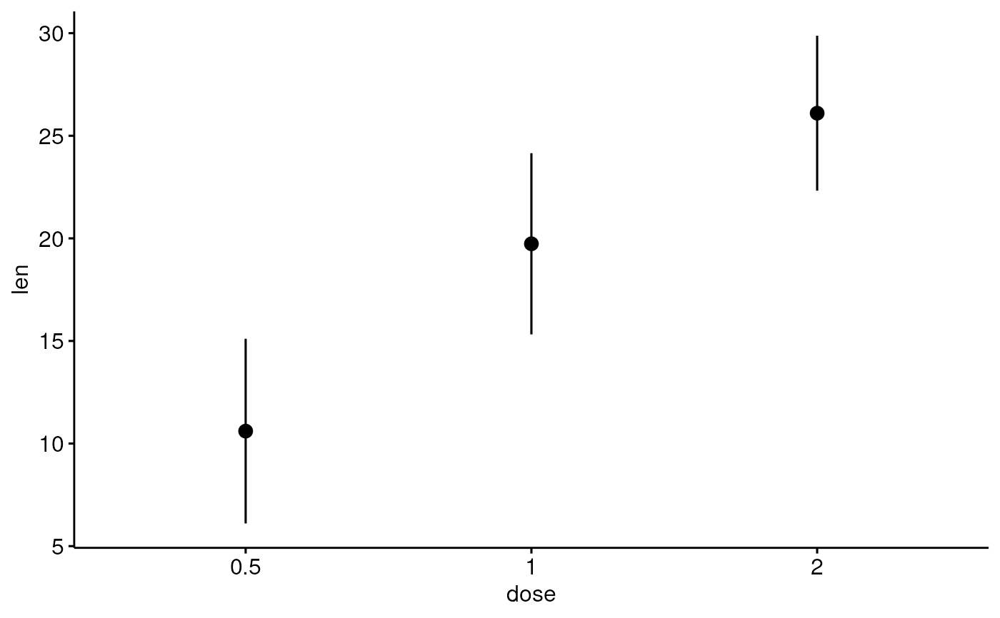
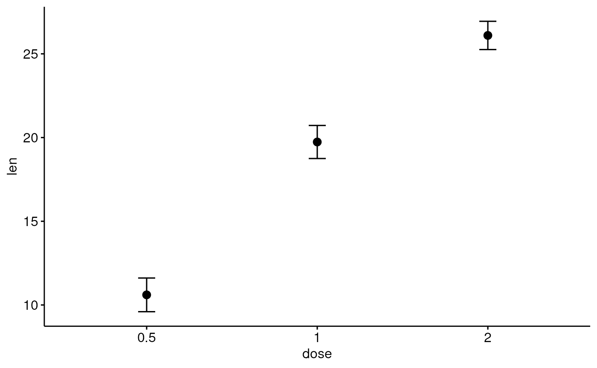
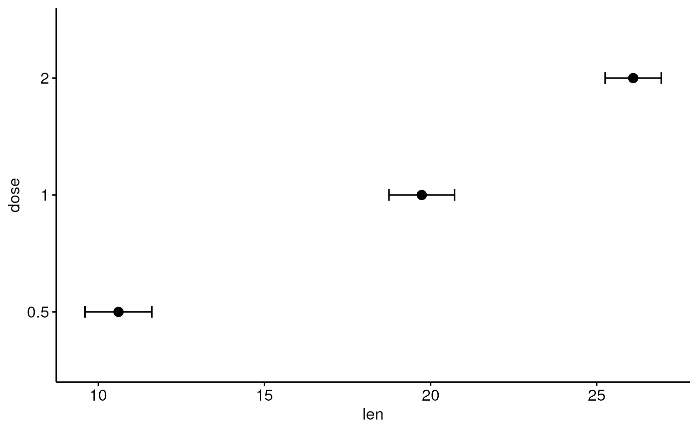
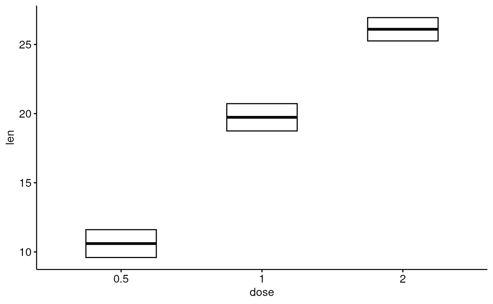
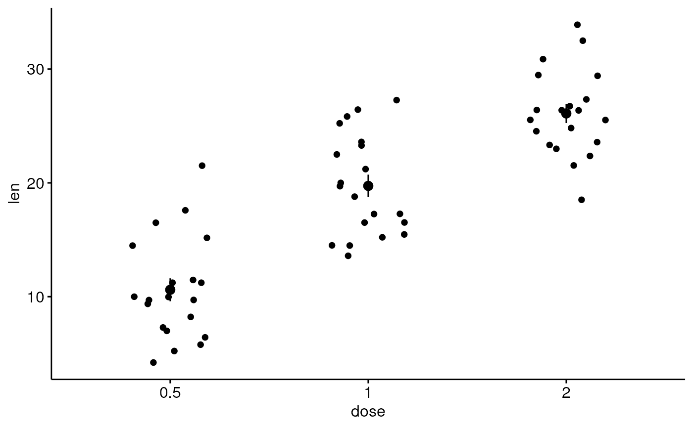
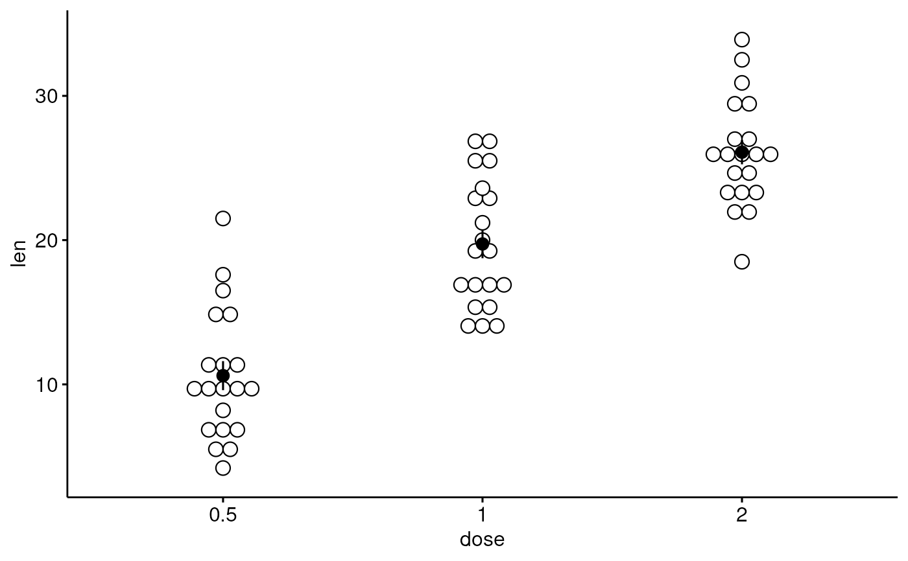

Visualizing Error
ggerrorplot.RdVisualizing error.
ggerrorplot(data, x, y, desc_stat = "mean_se", combine = FALSE, merge = FALSE, color = "black", fill = "white", palette = NULL, size = NULL, width = NULL, title = NULL, xlab = NULL, ylab = NULL, facet.by = NULL, panel.labs = NULL, short.panel.labs = TRUE, select = NULL, remove = NULL, order = NULL, add = "none", add.params = list(), error.plot = "pointrange", ci = 0.95, position = position_dodge(), ggtheme = theme_pubr(), ...)
Arguments
| data | a data frame |
|---|---|
| x, y | x and y variables for drawing. |
| desc_stat | descriptive statistics to be used for visualizing errors. Default value is "mean_se".
Allowed values are one of , "mean", "mean_se", "mean_sd", "mean_ci", "mean_range",
"median", "median_iqr", "median_mad", "median_range"; see |
| combine | logical value. Default is FALSE. Used only when y is a vector containing multiple variables to plot. If TRUE, create a multi-panel plot by combining the plot of y variables. |
| merge | logical or character value. Default is FALSE. Used only when y is a vector containing multiple variables to plot. If TRUE, merge multiple y variables in the same plotting area. Allowed values include also "asis" (TRUE) and "flip". If merge = "flip", then y variables are used as x tick labels and the x variable is used as grouping variable. |
| color, fill | outline and fill colors. |
| palette | the color palette to be used for coloring or filling by groups. Allowed values include "grey" for grey color palettes; brewer palettes e.g. "RdBu", "Blues", ...; or custom color palette e.g. c("blue", "red"); and scientific journal palettes from ggsci R package, e.g.: "npg", "aaas", "lancet", "jco", "ucscgb", "uchicago", "simpsons" and "rickandmorty". |
| size | Numeric value (e.g.: size = 1). change the size of points and outlines. |
| width | numeric value between 0 and 1 specifying box width. |
| title | plot main title. |
| xlab | character vector specifying x axis labels. Use xlab = FALSE to hide xlab. |
| ylab | character vector specifying y axis labels. Use ylab = FALSE to hide ylab. |
| facet.by | character vector, of length 1 or 2, specifying grouping variables for faceting the plot into multiple panels. Should be in the data. |
| panel.labs | a list of one or two character vectors to modify facet panel labels. For example, panel.labs = list(sex = c("Male", "Female")) specifies the labels for the "sex" variable. For two grouping variables, you can use for example panel.labs = list(sex = c("Male", "Female"), rx = c("Obs", "Lev", "Lev2") ). |
| short.panel.labs | logical value. Default is TRUE. If TRUE, create short labels for panels by omitting variable names; in other words panels will be labelled only by variable grouping levels. |
| select | character vector specifying which items to display. |
| remove | character vector specifying which items to remove from the plot. |
| order | character vector specifying the order of items. |
| add | character vector for adding another plot element (e.g.: dot plot or error bars). Allowed values are one or the combination of: "none", "dotplot", "jitter", "boxplot", "point", "mean", "mean_se", "mean_sd", "mean_ci", "mean_range", "median", "median_iqr", "median_mad", "median_range"; see ?desc_statby for more details. |
| add.params | parameters (color, shape, size, fill, linetype) for the argument 'add'; e.g.: add.params = list(color = "red"). |
| error.plot | plot type used to visualize error. Allowed values are one of c("pointrange", "linerange", "crossbar", "errorbar", "upper_errorbar", "lower_errorbar", "upper_pointrange", "lower_pointrange", "upper_linerange", "lower_linerange"). Default value is "pointrange" or "errorbar". Used only when add != "none" and add contains one "mean_*" or "med_*" where "*" = sd, se, .... |
| ci | the percent range of the confidence interval (default is 0.95). |
| position | Position adjustment, either as a string, or the result of a call to a position adjustment function. |
| ggtheme | function, ggplot2 theme name. Default value is theme_pubr(). Allowed values include ggplot2 official themes: theme_gray(), theme_bw(), theme_minimal(), theme_classic(), theme_void(), .... |
| ... | other arguments to be passed to be passed to ggpar(). |
Details
The plot can be easily customized using the function ggpar(). Read ?ggpar for changing:
main title and axis labels: main, xlab, ylab
axis limits: xlim, ylim (e.g.: ylim = c(0, 30))
axis scales: xscale, yscale (e.g.: yscale = "log2")
color palettes: palette = "Dark2" or palette = c("gray", "blue", "red")
legend title, labels and position: legend = "right"
plot orientation : orientation = c("vertical", "horizontal", "reverse")
See also
Examples
# Data: ToothGrowth data set we'll be used. df<- ToothGrowth head(df, 10)#> len supp dose #> 1 4.2 VC 0.5 #> 2 11.5 VC 0.5 #> 3 7.3 VC 0.5 #> 4 5.8 VC 0.5 #> 5 6.4 VC 0.5 #> 6 10.0 VC 0.5 #> 7 11.2 VC 0.5 #> 8 11.2 VC 0.5 #> 9 5.2 VC 0.5 #> 10 7.0 VC 0.5# Plot mean_se ggerrorplot(df, x = "dose", y = "len")# Change desc_stat to mean_sd # (other values include: mean_sd, mean_ci, median_iqr, ....) # Add labels ggerrorplot(df, x = "dose", y = "len", desc_stat = "mean_sd")# Change error.plot to "errorbar" and add mean point # Visualize the mean of each group ggerrorplot(df, x = "dose", y = "len", add = "mean", error.plot = "errorbar")# Horizontal plot ggerrorplot(df, x = "dose", y = "len", add = "mean", error.plot = "errorbar", orientation = "horizontal")# Change error.plot to "crossbar" ggerrorplot(df, x = "dose", y = "len", error.plot = "crossbar", width = 0.5)# Add jitter points and errors (mean_se) ggerrorplot(df, x = "dose", y = "len", add = "jitter")# Add dot and errors (mean_se) ggerrorplot(df, x = "dose", y = "len", add = "dotplot")#># Multiple groups with error bars and jitter point ggerrorplot(df, x = "dose", y = "len", color = "supp", palette = "Paired", error.plot = "pointrange", position = position_dodge(0.5))